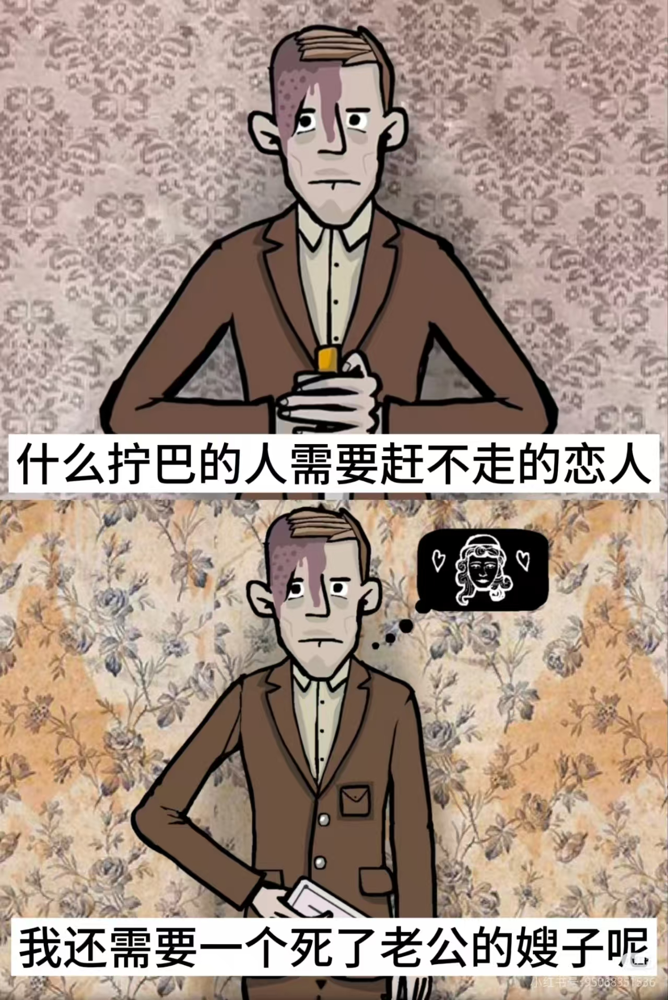
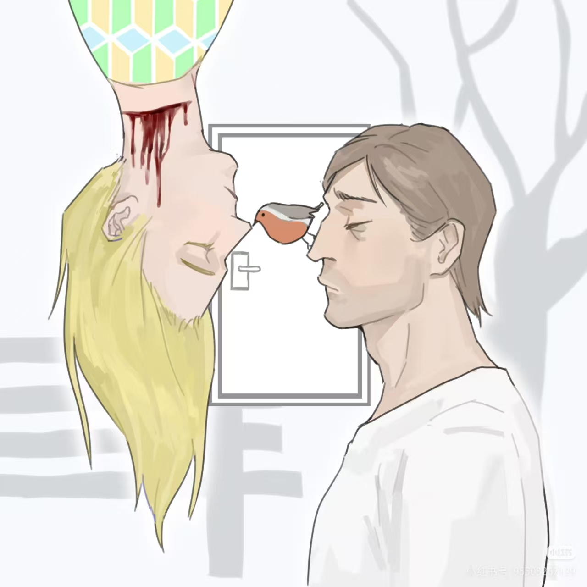

锈湖的奥秘，激发着无数探索者的灵感,这里收藏与展示来自全球玩家对锈湖世界的二次创作。
这些作品是平行的时间线，是角色的内心独白，是对未解之谜的大胆诠释。它们共同构成了锈湖故事不可或缺的“另一部分”。
感谢所有创作者的付出，是你们让这片湖水更加深邃。现在，请随意浏览，发掘隐藏在这些档案中的惊喜与震撼。
如果你看完了剧情及人物栏仍云里雾里不知所云，那是因为锈湖是多条时间线并行叙述了两个家族三代人的故事，点击下方链接，了解故事详情
横跨三个世纪的怪诞史诗，锈湖讲了一个什么故事？【岛游05-锈湖（上）】
Roots中的Albert是热度最高的人物之一，婴儿时期，妈妈Mary喂给哥哥和姐姐水和牛奶却喂给Albert鲜红的血，或许从那时起，他的一生就注定不凡。
长大后的他暗恋着自己的嫂子Ida，将自己的姐姐的儿子囚于深井，刺死的那只象征着哥哥与姐姐的欺凌的蝴蝶，将代表着耻辱的胎记深埋于面具之下
Rose是Albert人工合成的孩子，因此有Ida的血脉，继承了Ida的通灵技能，自小就发现了已经入了饿鬼道的William，William在Rose的帮助下转世成为了Laura


Bob和Laura在地铁站相见,相识，相爱,后因Laura的抑郁症而分手，Bob因此一蹶不振，凄美的爱情让他们成为玩家的意难平cp

